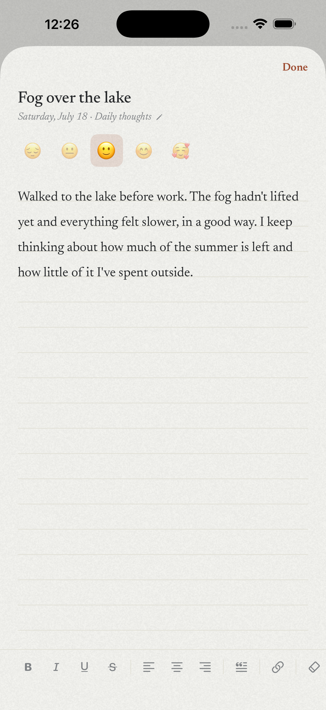
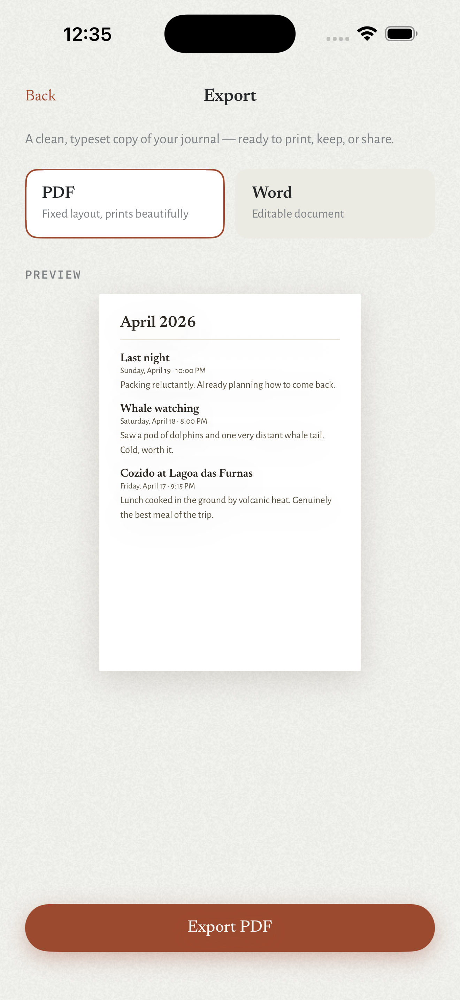
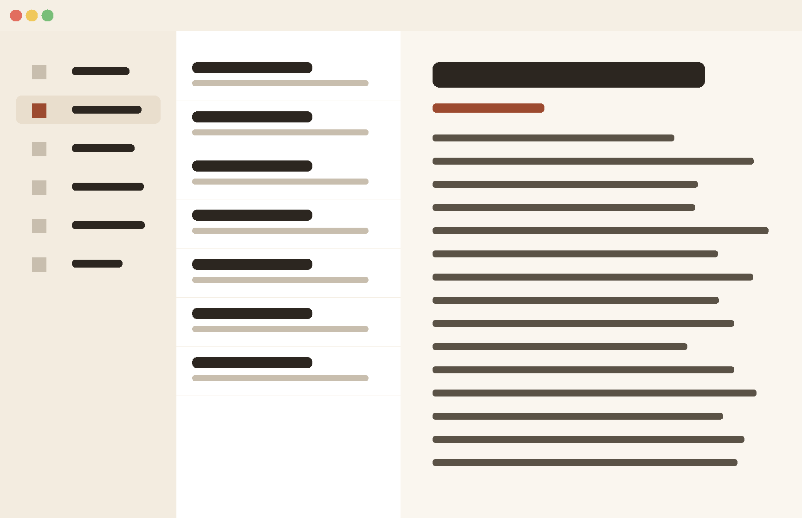

A private journal · iPhone · iPad · Mac
A calm, private place
for your words.
Papyr is a beautifully typeset journal that keeps your entries on your device — never on ours. Write, lock, and keep what matters close.
$4.99 · one-time · 7-day free trial
Features
Everything a journal should be.
Journals
Keep every part of your life in its own book.
Separate journals for daily thoughts, travel, recipes, a private manuscript — whatever you keep. Each one stays distinct, so your mind stays uncluttered.
Writing
A distraction-free page that feels like paper.
Write on a calm ruled surface with rich formatting — bold, italic, underline, blockquotes with an author line, links — and autosave that never makes you think about saving.

Privacy
Lock what's private behind Face ID.
Protect individual journals — or the whole app — with Face ID or a passcode. A locked journal stays sealed until it's truly you.
Export
Export a beautifully typeset copy.
Turn any journal into a clean, typeset document — PDF for a fixed layout that prints beautifully, or Word for something you can keep editing.

Details
Custom dates. Optional moods.
Backdate or reorder entries freely so your timeline reflects what really happened. Add a mood if you like — it's per-journal and off by default.
Privacy
Your entries live on your device. Always.
No accounts. No tracking. No servers holding your words. Papyr is built so that the only person who can read your journal is you.
On your device & your iCloud
Entries stay on your device and sync only through your own private iCloud. The developer never sees or stores your content.
No tracking, no analytics
There is no third-party analytics, no advertising SDK, and no data collection of any kind. Nothing leaves your control.
Lockable with Face ID
Protect individual journals — or the whole app — with Face ID or a passcode, so the private stays private.
One purchase, every device
Write on the couch. Continue at your desk.
Papyr is a single Universal Purchase for iPhone, iPad, and Mac. Your journals follow you across all of them.

The best journal is the one you'd still write in if no one could ever read it.
That's the whole idea
Pricing
Buy it once. It's yours.
Papyr Plus
one time · yours forever
- No subscription, no expiration
- 7-day free trial, starts automatically — no card required
- Universal Purchase — iPhone, iPad & Mac
FAQ
Questions, answered.
Yes. Your entries are stored on your device and sync only through your own private iCloud. The developer never sees or stores your content, and there is no tracking or analytics of any kind.
No. Papyr is a single $4.99 one-time purchase. There is no subscription and no expiration — once you buy it, it's yours.
A 7-day free trial starts automatically the first time you launch the app. No card is required to try it, and nothing charges automatically at the end.
Yes. Papyr uses your own private iCloud (CloudKit) to keep journals in sync across your iPhone, iPad, and Mac. Nothing passes through the developer's servers.
Any journal can be exported as a beautifully typeset PDF (fixed layout, prints beautifully) or as an editable Word document.
Papyr runs on iPhone, iPad, and Mac. It's a Universal Purchase, so one $4.99 payment unlocks it on all of them.
Support
We're glad you're here.
Papyr is designed to stay out of your way. If something isn't behaving as it should, the guides below cover the essentials — and you can always reach a real person.
Getting started
Create a journal
Tap New Journal, give it a name, and pick whether mood tagging is on. Make as many as you like — each stays its own book.
Write an entry
Tap New entry and start writing on the ruled page. Use the formatting bar for bold, italic, blockquotes and links. Everything autosaves as you go.
Lock a journal
Open a journal's settings and turn on Face ID or a passcode. You can also enable an app-wide lock for everything at once.
Export your writing
From a journal's menu, choose Export and pick PDF for a print-ready typeset copy or Word for an editable document.
Restore a purchase
New device or reinstall? Open Settings and tap Restore Purchases — your Universal Purchase unlocks Papyr again at no extra cost.
Contact us
Still stuck? Write to us.
Email papyr@regentmediagroup.com and we'll get back to you. Include your device and iOS/macOS version so we can help faster.
Common questions
Yes. Your entries are stored on your device and sync only through your own private iCloud. The developer never sees or stores your content, and there is no tracking or analytics of any kind.
No. Papyr is a single $4.99 one-time purchase. There is no subscription and no expiration — once you buy it, it's yours.
A 7-day free trial starts automatically the first time you launch the app. No card is required to try it, and nothing charges automatically at the end.
Yes. Papyr uses your own private iCloud (CloudKit) to keep journals in sync across your iPhone, iPad, and Mac. Nothing passes through the developer's servers.
Any journal can be exported as a beautifully typeset PDF (fixed layout, prints beautifully) or as an editable Word document.
Papyr runs on iPhone, iPad, and Mac. It's a Universal Purchase, so one $4.99 payment unlocks it on all of them.
Legal
Terms of Service
Effective date: July 23, 2026
These Terms of Service ("Terms") govern your use of the Papyr application ("Papyr" or the "App"), provided by Regent Media Group ("we," "us," or "our"). By downloading, installing, or using Papyr, you agree to these Terms. If you do not agree, do not use the App.
1. License
Subject to these Terms, we grant you a personal, limited, non-exclusive, non-transferable, revocable license to download and use Papyr on Apple devices that you own or control, as permitted by the App Store Terms of Service and Apple's Licensed Application End User License Agreement (the "Apple Standard EULA"). This license is for your personal, non-commercial use.
2. Free trial and purchases
Papyr includes a 7-day free trial that begins automatically when you first open the App. No payment information is required to start the trial. Papyr Plus is a one-time purchase that unlocks the App's full features. It is not a subscription — there is no recurring charge and no expiration. Because Papyr uses Apple's Universal Purchase, a single purchase unlocks Papyr Plus across your iPhone, iPad, and Mac when signed in to the same Apple Account. All purchases are processed by Apple through the App Store and are subject to Apple's terms. Pricing is displayed in the App and on the App Store. Refunds, where applicable, are handled by Apple in accordance with Apple's policies; we do not process refunds directly.
3. Your content
You retain all rights to the journals, entries, and other content you create in Papyr ("Your Content"). We claim no ownership over Your Content and have no access to it. You are solely responsible for Your Content and for maintaining appropriate backups (for example, by keeping iCloud enabled and by using the App's export features). We are not responsible for any loss of Your Content.
4. Acceptable use
You agree not to: (a) reverse engineer, decompile, or attempt to extract the source code of the App, except as permitted by law; (b) use the App for any unlawful purpose; or (c) interfere with or disrupt the integrity or performance of the App.
5. Intellectual property
The App, including its design, software, text, graphics, and the Papyr name and logo, is owned by Regent Media Group and is protected by intellectual property laws. These Terms do not grant you any rights to our trademarks or branding.
6. Apple App Store
You acknowledge that these Terms are between you and Regent Media Group only, and not with Apple. Apple is not responsible for the App or its content. To the extent these Terms conflict with the Apple Standard EULA, the Apple Standard EULA governs solely with respect to your use of the App as licensed through the App Store. Apple and its subsidiaries are third-party beneficiaries of these Terms and, upon your acceptance, have the right to enforce them against you. Apple has no obligation to provide any maintenance or support for the App, and is not responsible for addressing any claims relating to the App.
7. Disclaimer of warranties
The App is provided "as is" and "as available," without warranties of any kind, whether express or implied, including implied warranties of merchantability, fitness for a particular purpose, and non-infringement. We do not warrant that the App will be uninterrupted, error-free, or that Your Content will always be preserved or recoverable.
8. Limitation of liability
To the fullest extent permitted by law, Regent Media Group will not be liable for any indirect, incidental, special, consequential, or punitive damages, or for any loss of data, profits, or content, arising out of or related to your use of the App. Our total liability for any claim relating to the App will not exceed the amount you paid for the App, if any.
9. Termination
These Terms remain in effect while you use the App. We may suspend or terminate your license if you materially breach these Terms. You may terminate at any time by deleting the App. Sections that by their nature should survive termination (including Sections 3, 5, 7, 8, and 10) will survive.
10. Governing law
These Terms are governed by the laws of the State of Florida, without regard to its conflict-of-laws principles, except where a mandatory law of your place of residence requires otherwise.
11. Changes to these Terms
We may update these Terms from time to time. When we do, we will revise the effective date above and post the updated Terms at this URL. Your continued use of the App after changes take effect constitutes acceptance of the revised Terms.
12. Contact us
Regent Media Group, papyr@regentmediagroup.com, https://papyr.regentmediagroup.com/support.
Legal
Privacy Policy
Effective date: July 23, 2026
Papyr ("Papyr," "we," "us," or "our"), a product of Regent Media Group, is built around a simple promise: your journal is yours. This Privacy Policy explains what information the Papyr app does — and does not — handle.
The short version
We do not collect, sell, rent, or share your personal information. We do not track you, and Papyr contains no third-party advertising or analytics. Your journal entries are stored on your device and, if you enable iCloud, in your own private iCloud account — never on servers we control. We have no ability to read, access, or recover your journal content.
Information we do not collect
Papyr has no accounts, no sign-up, and no login. We do not ask for your name, email address, phone number, or location. We do not operate analytics, advertising, tracking, or telemetry services, and we do not use third-party SDKs that collect your data. We receive no personal information from your use of the app.
Information stored on your device
Your journal entries — including their text, titles, dates, formatting, and any mood tags — are stored locally on your device. Your app preferences (such as your chosen theme, accent color, and lock settings) are also stored locally. This information stays on your device and is not transmitted to us.
iCloud sync
If you are signed in to iCloud and have iCloud enabled for Papyr, your journals sync across your Apple devices through Apple's iCloud service, using a private CloudKit database tied to your personal Apple Account. Your content is stored in your iCloud, not on any server operated by Regent Media Group. The sync is handled entirely by Apple, and your use of iCloud is governed by Apple's Privacy Policy and iCloud terms. We cannot see, access, or retrieve your synced content. If you do not use iCloud, your entries remain solely on your device.
Face ID, Touch ID, and passcodes
Papyr lets you optionally lock individual journals (or the whole app) using Face ID, Touch ID, or a passcode. This authentication is performed entirely by your device's operating system through Apple's local authentication framework. Biometric data never leaves your device and is never accessible to Papyr or to us. Papyr only receives a success or failure result.
Purchases
Papyr offers a one-time purchase ("Papyr Plus") and a free trial. All purchases are processed by Apple through the App Store. We do not collect or receive your payment card number or billing details. Apple may share limited transaction information with us (such as confirmation that a purchase or refund occurred) so we can deliver what you bought. Purchases are governed by Apple's terms and Apple's Privacy Policy.
Analytics and tracking
Papyr does not include analytics or tracking of any kind, and does not use the Advertising Identifier. Apple may independently collect aggregate, non-identifying information about App Store downloads and app usage if you have enabled such sharing in your device settings; that collection is controlled by Apple and your device settings, not by us.
Children's privacy
Papyr does not knowingly collect any personal information from anyone, including children. Because we collect no data at all, the app does not create a specific privacy risk for children under 13 (or the equivalent age in your region).
Your control over your information
Because your data lives on your device and in your own iCloud, you remain in control of it at all times. Delete an entry or journal within the app to remove it. Disable iCloud for Papyr in your device settings to stop syncing. Delete the app to remove its local data from that device — to remove synced data, delete it within the app (which syncs the deletion) or manage Papyr's data in your iCloud settings.
Data security
We rely on the security of your device and of Apple's iCloud infrastructure to protect your information. We recommend using a device passcode and enabling Papyr's built-in journal locks for sensitive content.
Changes to this policy
We may update this Privacy Policy from time to time. When we do, we will revise the effective date above and post the updated policy at this URL. Material changes will be reflected here.
Contact us
If you have questions about this Privacy Policy, contact us at Regent Media Group, papyr@regentmediagroup.com, or https://papyr.regentmediagroup.com/support.